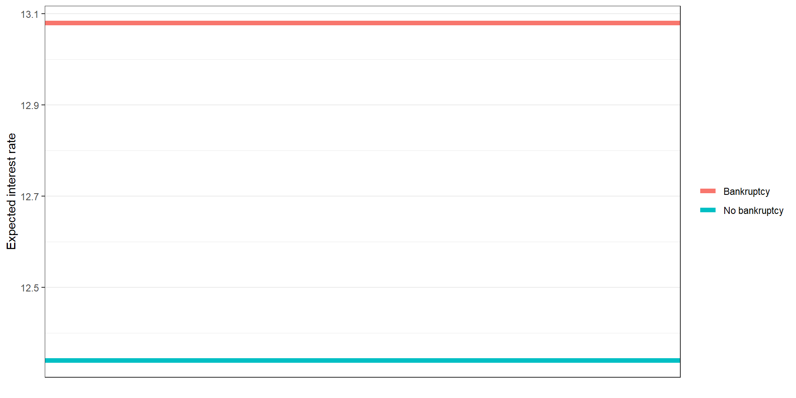
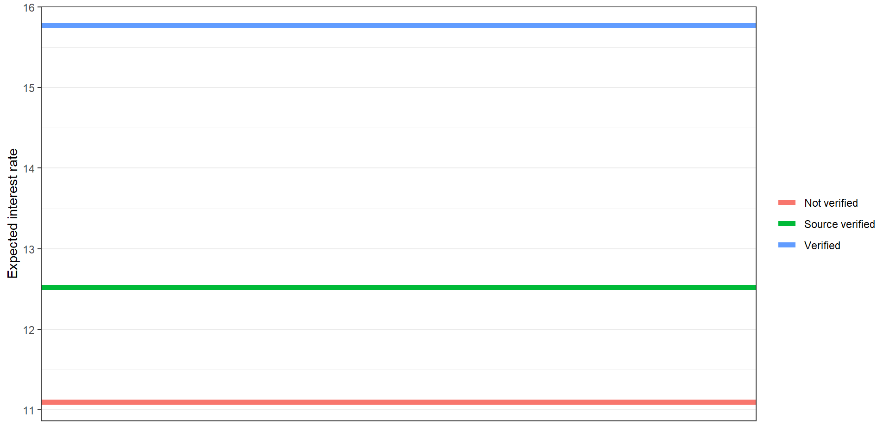

Multiple Linear Regression & Categorical Predictors (ISL 3.2.1 & 3.3.1)
Simple linear regression involves regressing \(Y\) on only one \(X\)
\[Y_i = \beta_0 + \beta_1 X_i + \epsilon_i\]
Multiple linear regression involves regressing \(Y\) on multiple \(X\)’s
\[Y_i = \beta_0 + \beta_1 X_{1i} + \beta_2 X_{2i} + ... + \beta_p X_{pi} + \epsilon_i.\]
Why would we want multiple \(X\)’s?
This dataset represents thousands of loans made through the Lending Club platform, which is a platform that allows individuals to lend to other individuals.
You can type ? loans_full_schema into Console for the full data documentation.
Rows: 10,000
Columns: 57
$ emp_title <chr> "global config engineer ", "warehouse…
$ emp_length <dbl> 3, 10, 3, 1, 10, NA, 10, 10, 10, 3, 1…
$ state <fct> NJ, HI, WI, PA, CA, KY, MI, AZ, NV, I…
$ homeownership <fct> MORTGAGE, RENT, RENT, RENT, RENT, OWN…
$ annual_income <dbl> 90000, 40000, 40000, 30000, 35000, 34…
$ verified_income <fct> Verified, Not Verified, Source Verifi…
$ debt_to_income <dbl> 18.01, 5.04, 21.15, 10.16, 57.96, 6.4…
$ annual_income_joint <dbl> NA, NA, NA, NA, 57000, NA, 155000, NA…
$ verification_income_joint <fct> , , , , Verified, , Not Verified, , ,…
$ debt_to_income_joint <dbl> NA, NA, NA, NA, 37.66, NA, 13.12, NA,…
$ delinq_2y <int> 0, 0, 0, 0, 0, 1, 0, 1, 1, 0, 0, 0, 0…
$ months_since_last_delinq <int> 38, NA, 28, NA, NA, 3, NA, 19, 18, NA…
$ earliest_credit_line <dbl> 2001, 1996, 2006, 2007, 2008, 1990, 2…
$ inquiries_last_12m <int> 6, 1, 4, 0, 7, 6, 1, 1, 3, 0, 4, 4, 8…
$ total_credit_lines <int> 28, 30, 31, 4, 22, 32, 12, 30, 35, 9,…
$ open_credit_lines <int> 10, 14, 10, 4, 16, 12, 10, 15, 21, 6,…
$ total_credit_limit <int> 70795, 28800, 24193, 25400, 69839, 42…
$ total_credit_utilized <int> 38767, 4321, 16000, 4997, 52722, 3898…
$ num_collections_last_12m <int> 0, 0, 0, 0, 0, 0, 0, 0, 0, 0, 0, 0, 0…
$ num_historical_failed_to_pay <int> 0, 1, 0, 1, 0, 0, 0, 0, 0, 0, 1, 0, 0…
$ months_since_90d_late <int> 38, NA, 28, NA, NA, 60, NA, 71, 18, N…
$ current_accounts_delinq <int> 0, 0, 0, 0, 0, 0, 0, 0, 0, 0, 0, 0, 0…
$ total_collection_amount_ever <int> 1250, 0, 432, 0, 0, 0, 0, 0, 0, 0, 0,…
$ current_installment_accounts <int> 2, 0, 1, 1, 1, 0, 2, 2, 6, 1, 2, 1, 2…
$ accounts_opened_24m <int> 5, 11, 13, 1, 6, 2, 1, 4, 10, 5, 6, 7…
$ months_since_last_credit_inquiry <int> 5, 8, 7, 15, 4, 5, 9, 7, 4, 17, 3, 4,…
$ num_satisfactory_accounts <int> 10, 14, 10, 4, 16, 12, 10, 15, 21, 6,…
$ num_accounts_120d_past_due <int> 0, 0, 0, 0, 0, 0, 0, NA, 0, 0, 0, 0, …
$ num_accounts_30d_past_due <int> 0, 0, 0, 0, 0, 0, 0, 0, 0, 0, 0, 0, 0…
$ num_active_debit_accounts <int> 2, 3, 3, 2, 10, 1, 3, 5, 11, 3, 2, 2,…
$ total_debit_limit <int> 11100, 16500, 4300, 19400, 32700, 272…
$ num_total_cc_accounts <int> 14, 24, 14, 3, 20, 27, 8, 16, 19, 7, …
$ num_open_cc_accounts <int> 8, 14, 8, 3, 15, 12, 7, 12, 14, 5, 8,…
$ num_cc_carrying_balance <int> 6, 4, 6, 2, 13, 5, 6, 10, 14, 3, 5, 3…
$ num_mort_accounts <int> 1, 0, 0, 0, 0, 3, 2, 7, 2, 0, 2, 3, 3…
$ account_never_delinq_percent <dbl> 92.9, 100.0, 93.5, 100.0, 100.0, 78.1…
$ tax_liens <int> 0, 0, 0, 1, 0, 0, 0, 0, 0, 0, 0, 0, 0…
$ public_record_bankrupt <int> 0, 1, 0, 0, 0, 0, 0, 0, 0, 0, 1, 0, 0…
$ loan_purpose <fct> moving, debt_consolidation, other, de…
$ application_type <fct> individual, individual, individual, i…
$ loan_amount <int> 28000, 5000, 2000, 21600, 23000, 5000…
$ term <dbl> 60, 36, 36, 36, 36, 36, 60, 60, 36, 3…
$ interest_rate <dbl> 14.07, 12.61, 17.09, 6.72, 14.07, 6.7…
$ installment <dbl> 652.53, 167.54, 71.40, 664.19, 786.87…
$ grade <fct> C, C, D, A, C, A, C, B, C, A, C, B, C…
$ sub_grade <fct> C3, C1, D1, A3, C3, A3, C2, B5, C2, A…
$ issue_month <fct> Mar-2018, Feb-2018, Feb-2018, Jan-201…
$ loan_status <fct> Current, Current, Current, Current, C…
$ initial_listing_status <fct> whole, whole, fractional, whole, whol…
$ disbursement_method <fct> Cash, Cash, Cash, Cash, Cash, Cash, C…
$ balance <dbl> 27015.86, 4651.37, 1824.63, 18853.26,…
$ paid_total <dbl> 1999.330, 499.120, 281.800, 3312.890,…
$ paid_principal <dbl> 984.14, 348.63, 175.37, 2746.74, 1569…
$ paid_interest <dbl> 1015.19, 150.49, 106.43, 566.15, 754.…
$ paid_late_fees <dbl> 0, 0, 0, 0, 0, 0, 0, 0, 0, 0, 0, 0, 0…
$ bankruptcy <lgl> FALSE, TRUE, FALSE, FALSE, FALSE, FAL…
$ credit_util <dbl> 0.54759517, 0.15003472, 0.66134832, 0…interest_rate Interest rate on the loan, in an annual percentage.bankruptcy An indicator variable for whether the borrower has a past bankruptcy in their record. This variable takes a value of 1 if the answer is yes and 0 if the answer is no.verified_income Categorical variable describing whether the borrower’s income source and amount have been verified, with levels Verified (source and amount verified), Source Verified (source only verified), and Not Verified.
Call:
lm(formula = interest_rate ~ bankruptcy, data = loans)
Residuals:
Min 1Q Median 3Q Max
-7.7648 -3.6448 -0.4548 2.7120 18.6020
Coefficients:
Estimate Std. Error t value Pr(>|t|)
(Intercept) 12.3380 0.0533 231.490 < 2e-16 ***
bankruptcyTRUE 0.7368 0.1529 4.819 1.47e-06 ***
---
Signif. codes: 0 '***' 0.001 '**' 0.01 '*' 0.05 '.' 0.1 ' ' 1
Residual standard error: 4.996 on 9998 degrees of freedom
Multiple R-squared: 0.002317, Adjusted R-squared: 0.002217
F-statistic: 23.22 on 1 and 9998 DF, p-value: 1.467e-06How do we interpret the slope? What does it mean to be one unit more for X?
# A tibble: 2 × 5
term estimate std.error statistic p.value
<chr> <dbl> <dbl> <dbl> <dbl>
1 (Intercept) 12.3 0.0533 231. 0
2 bankruptcyTRUE 0.737 0.153 4.82 0.00000147\(\hat{\text{Interest rate}}_i\) = 12.34
\(+\) 0.74 * \(I(\text{Bankruptcy}_i = \text{TRUE})\)
\(\hat{\text{Interest rate}}_i\) = 12.34
\(+\) 0.74 * \(I(\text{Bankruptcy}_i = \text{TRUE})\)
Definition:
\(I(\text{Bankruptcy}_i = \text{TRUE})\) is an indicator variable.
\(\hat{\text{Interest rate}}_i\) = 12.34
\(+\) 0.74 * \(I(\text{Bankruptcy}_i = \text{TRUE})\)
Expected interest rate for people with no bankruptcy on their record is 12.34.
Expected interest rate for people with at least one bankruptcy on their record is 12.34 + 0.74 = 13.08.

Welch Two Sample t-test
data: interest_rate_bankruptcy_false and interest_rate_bankruptcy_true
t = -4.9599, df = 1598.6, p-value = 7.803e-07
alternative hypothesis: true difference in means is not equal to 0
95 percent confidence interval:
-1.0281548 -0.4454164
sample estimates:
mean of x mean of y
12.33800 13.07479
Welch Two Sample t-test
data: interest_rate_bankruptcy_false and interest_rate_bankruptcy_true
t = -4.9599, df = 1598.6, p-value = 7.803e-07
alternative hypothesis: true difference in means is not equal to 0
95 percent confidence interval:
-1.0281548 -0.4454164
sample estimates:
mean of x mean of y
12.33800 13.07479 They are the same!
That was a continuous variable regression on a categorical variable with two levels (possibilities).
What if we regressed on a categorical variable with three or more levels (possibilities)?
Notice that the verified_income variable is categorical with three levels
Call:
lm(formula = interest_rate ~ verified_income, data = loans)
Residuals:
Min 1Q Median 3Q Max
-9.0437 -3.7495 -0.6795 2.5345 19.6905
Coefficients:
Estimate Std. Error t value Pr(>|t|)
(Intercept) 11.09946 0.08091 137.18 <2e-16 ***
verified_incomeSource Verified 1.41602 0.11074 12.79 <2e-16 ***
verified_incomeVerified 3.25429 0.12970 25.09 <2e-16 ***
---
Signif. codes: 0 '***' 0.001 '**' 0.01 '*' 0.05 '.' 0.1 ' ' 1
Residual standard error: 4.851 on 9997 degrees of freedom
Multiple R-squared: 0.05945, Adjusted R-squared: 0.05926
F-statistic: 315.9 on 2 and 9997 DF, p-value: < 2.2e-16# A tibble: 3 × 5
term estimate std.error statistic p.value
<chr> <dbl> <dbl> <dbl> <dbl>
1 (Intercept) 11.1 0.0809 137. 0
2 verified_incomeSource Verified 1.42 0.111 12.8 3.79e- 37
3 verified_incomeVerified 3.25 0.130 25.1 8.61e-135Our model appears to be
\(\hat{\text{Interest rate}}_i\) =11.1
+ 1.42 \(I(\text{verified_income}_i = \text{Source Verified})\)
+ 3.25 \(I(\text{verified_income}_i = \text{Verified}).\)
Is anything missing?
When fitting a regression model with a categorical variable that has \(k\) levels where \(k \geq 2\), software will provide a coefficient for \(k-1\) of those levels.
\(\hat{\text{Interest rate}}_i\) =11.1
+ 1.42 \(I(\text{verified_income}_i = \text{Source Verified})\)
+ 3.25 \(I(\text{verified_income}_i = \text{Verified}).\)
\(\hat{\text{Interest rate}}_i\) =11.1
+ 1.42 \(I(\text{verified_income}_i = \text{Source Verified})\)
+ 3.25 \(I(\text{verified_income}_i = \text{Verified}).\)

Why shouldn’t we just convert the verified_income variable to a numeric?
Call:
lm(formula = interest_rate ~ verified_income_numeric, data = loans)
Residuals:
Min 1Q Median 3Q Max
-8.9344 -3.6798 -0.6544 2.5602 19.7602
Coefficients:
Estimate Std. Error t value Pr(>|t|)
(Intercept) 11.02980 0.07395 149.15 <2e-16 ***
verified_income_numeric 1.60731 0.06418 25.04 <2e-16 ***
---
Signif. codes: 0 '***' 0.001 '**' 0.01 '*' 0.05 '.' 0.1 ' ' 1
Residual standard error: 4.852 on 9998 degrees of freedom
Multiple R-squared: 0.05903, Adjusted R-squared: 0.05893
F-statistic: 627.2 on 1 and 9998 DF, p-value: < 2.2e-16\(\hat{\beta_1} = 1.61\)
By converting we are implicitly assuming that there is a one unit difference between each of the levels:
This may not be the case, maybe “Source only verified” and “Source and amount verified” are more similar than “Not verified”
Not good practice!
Call:
lm(formula = interest_rate ~ bankruptcy + total_credit_lines,
data = loans)
Residuals:
Min 1Q Median 3Q Max
-7.9651 -3.7041 -0.6226 2.7263 18.8697
Coefficients:
Estimate Std. Error t value Pr(>|t|)
(Intercept) 12.762332 0.109102 116.976 < 2e-16 ***
bankruptcyTRUE 0.737299 0.152762 4.826 1.41e-06 ***
total_credit_lines -0.018712 0.004199 -4.456 8.44e-06 ***
---
Signif. codes: 0 '***' 0.001 '**' 0.01 '*' 0.05 '.' 0.1 ' ' 1
Residual standard error: 4.991 on 9997 degrees of freedom
Multiple R-squared: 0.004295, Adjusted R-squared: 0.004095
F-statistic: 21.56 on 2 and 9997 DF, p-value: 4.54e-10# A tibble: 3 × 5
term estimate std.error statistic p.value
<chr> <dbl> <dbl> <dbl> <dbl>
1 (Intercept) 12.8 0.109 117. 0
2 bankruptcyTRUE 0.737 0.153 4.83 0.00000141
3 total_credit_lines -0.0187 0.00420 -4.46 0.00000844\(\hat{\text{Interest rate}}_i\) = 12.76
\(+\) 0.74 \(I(\text{Banruptcy_i = TRUE})\)
\(+\) -0.02 \(\text{Number credit lines}_i\)
\(\hat{\text{Interest rate}}_i\) = 12.76
\(+\) 0.74 \(I(\text{Banruptcy_i = TRUE})\)
\(+\) -0.02 \(\text{Number credit lines}_i\)
\(\hat{\text{Interest rate}}_i\) = 12.76
\(+\) 0.74 \(I(\text{Banruptcy_i = TRUE})\)
\(+\) -0.02 \(\text{Number credit lines}_i\)
We interpret a slope with all other variables fixed: